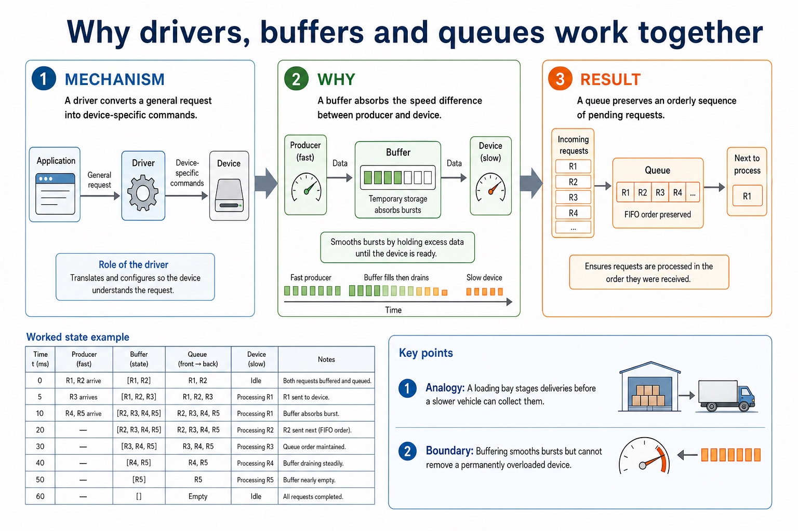
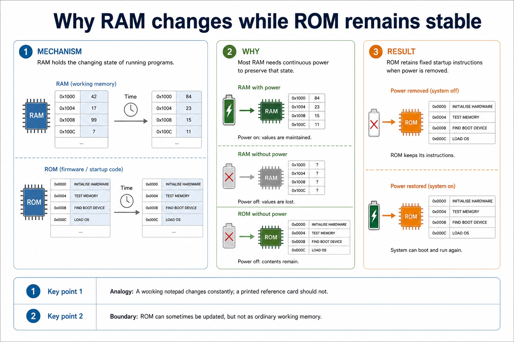

S3.04, S3.05, S3.06, S3.07 | Visual relationships, mechanisms and worked examples.
Quickdiagnose + essentials
Fullcomplete explanation
Deepprerequisites + extension
Choosepractice by need
Teacher choice
Choose the depth for this group
Quick route
Use the diagnostic, learning objectives, first worked example and foundation question. Stop once the learner can explain the central distinction accurately.
Full route
Teach every knowledge-point material set, the worked method and all lesson questions.
Deep route
Add the prerequisite refresher, ask learners to connect the concept checklist, discuss the labelled extension and complete a transfer question without a model answer.
Part 1 | optional depth
Prerequisite knowledge and quick diagnostic
Recall S3.05 before starting this lesson.
Give one accurate definition or method step before continuing. If it is missing, revisit only that prerequisite.
Open optional prerequisite refresher
Explain the differences between RAM and ROM, including their use in a range of devices and systems.
Distinguish RAM and ROM.
Part 2 | visual explanation
Learn each point through visuals
Use the relationship map, mechanism and concrete cue before opening precise wording.
01
S3.04 · process
Why buffers are used
Concept relationships
ProducerCreates data at one rate
BufferTemporary holding area
ConsumerUses data at another rate
MismatchSpeeds differ temporarily
temporarilyAn output buffer temporarily holds data because the…
speedA buffer absorbs the speed difference between producer…
See how it works
Plan
Translate the stated design
A buffer absorbs the speed difference between producer and device.
Execute
Apply one complete operation
An output buffer temporarily holds data because the processor can produce it faster or in different-sized bursts than…
Test
Trace state and boundaries
Why buffers are used.
S3.04 diagrams
01
Diagram · 1 of 1
Why drivers, buffers and queues work together

Open text transcript
A driver converts a general request into device-specific commands.
A buffer absorbs the speed difference between producer and device.
A queue preserves an orderly sequence of pending requests.
Open precise syllabus wording
Understand why buffers are used.
Show understanding of the use of buffers, including temporary storage used to manage different producer and consumer rates.
02
S3.05 · comparison
RAM and ROM
Concept relationships
RAMVolatile working memory
ROMNon-volatile startup memory
Power lossRAM contents disappear
WritingRAM changes during operation
distinguishRAM and ROM.
See how it works
Identify
Name both alternatives precisely
RAM and ROM.
Contrast
Connect structure to consequence
The differences between RAM and ROM, including their use in a range of devices and systems.
Choose
Justify against the scenario
ROM is non-volatile primary memory used for instructions that must remain when power is removed, such as firmware…
S3.05 diagrams
01
Comparison · 1 of 1
Why RAM changes while ROM remains stable

Open text transcript
RAM holds the changing state of running programs.
Most RAM needs continuous power to preserve that state.
ROM retains fixed startup instructions when power is removed.
Open precise syllabus wording
Distinguish RAM and ROM.
Explain the differences between RAM and ROM, including their use in a range of devices and systems.
03
S3.06 · comparison
Uses of SRAM and DRAM and reasons for each use
Concept relationships
main memoryDRAM stores charge in capacitors, requires refresh and…
SRAMUses of SRAM and DRAM and reasons for…
DRAMThe differences between SRAM and DRAM, including their…
cacheSRAM stores bits using flip-flop circuits, needs no…
usesAn HDD or magnetic hard disk uses rotating…
See how it works
Identify
Name both alternatives precisely
Uses of SRAM and DRAM and reasons for each use.
Contrast
Connect structure to consequence
The differences between SRAM and DRAM, including their uses in a range of devices and systems and the…
Choose
Justify against the scenario
DRAM stores charge in capacitors, requires refresh and is slower but cheaper and denser, so it is used…
Open precise syllabus wording
Explain uses of SRAM and DRAM and reasons for each use.
Explain the differences between SRAM and DRAM, including their uses in a range of devices and systems and the reasons for choosing one instead of the other.
04
S3.07 · comparison
PROM, EPROM and EEPROM
Concept relationships
PROMProgrammed once
EPROMErased with ultraviolet light
EEPROMErased electrically
All threeRetain contents without power
bufferAn output buffer temporarily holds data because the…
See how it works
Identify
Name both alternatives precisely
The difference between PROM, EPROM and EEPROM, including how each can be programmed or erased.
Contrast
Connect structure to consequence
PROM, EPROM and EEPROM.
Choose
Justify against the scenario
PROM is programmed once.
Open precise syllabus wording
Understand PROM, EPROM and EEPROM.
Explain the difference between PROM, EPROM and EEPROM, including how each can be programmed or erased.
Open precise terminology and exam facts
Show understanding of the use of buffers, including temporary storage used to manage different producer and consumer rates.
Explain the differences between RAM and ROM, including their use in a range of devices and systems.
Explain the differences between SRAM and DRAM, including their uses in a range of devices and systems and the reasons for choosing one instead of the other.
Explain the difference between PROM, EPROM and EEPROM, including how each can be programmed or erased.
A speaker uses a DAC/amplifier to drive a coil and cone, producing pressure waves. An output buffer temporarily holds data because the processor can produce it faster or in different-sized bursts than a printer or audio device can consume it.
An HDD spins magnetic platters while an actuator positions read/write heads; writing changes magnetic orientation and reading senses it. Flash memory stores charge in floating-gate cells and has no moving parts.
An optical drive spins a disc and directs a laser at its track. Reflected-light differences are read as data; a writer uses a higher-power laser to change a dye or recording layer.
A magnetic HDD uses moving read/write heads over rotating platters. Flash memory stores charge electronically with no moving parts. An optical disc reader/writer uses a laser to read marks and, on writable media, to create or alter marks.
RAM is volatile read/write primary memory used for programs and data currently being processed. ROM is non-volatile primary memory used for instructions that must remain when power is removed, such as firmware or start-up instructions. ROM is not ordinary long-term storage for user files.
SRAM stores bits using flip-flop circuits, needs no refresh and is fast but expensive with lower density, so it is used for cache. DRAM stores charge in capacitors, requires refresh and is slower but cheaper and denser, so it is used for main memory.
PROM is programmed once. EPROM can be erased with ultraviolet light and reprogrammed. EEPROM is erased and rewritten electrically, often without removing it from the system. All three are non-volatile ROM technologies.
Required device overview: a laser printer uses an electrostatic drum, laser, toner and fuser; a 3D printer builds successive layers; a speaker converts an electrical signal into sound. An HDD or magnetic hard disk uses rotating magnetic platters, flash memory stores charge electronically, and an optical reader/writer uses a laser.
Worked method
Print a page
Read an HDD block
Choose a storage mechanism
Choose memory for a computer system
The operating system places page data in a print buffer.
Part 3 | select by learner need
Practice by question type
explainexplainfoundation8 marks
Question 1. Explain why a buffer is used when a computer sends a large document to a laser printer. Describe how data is read from a magnetic hard disk drive. Explain how an HDD, flash memory and an optical reader/writer store or retrieve data. Compare SRAM and DRAM and explain why DRAM is normally used for main memory.
Show answer and marking guidance
Answer: processor/computer and printer operate at different speeds; buffer temporarily stores print data; printer reads data at its own rate; computer/processor can continue other processing without waiting for the full print; platters rotate; actuator positions read/write head over the required track; required sector passes beneath the head; head senses magnetic patterns which are decoded as data; HDD mechanism; flash mechanism; optical reader/writer mechanism; SRAM is faster / does not require refresh; DRAM requires refresh / is slower; DRAM has greater density / lower cost per bit; main memory needs large capacity, making DRAM more economical
Marking guidance: Do not accept 'the buffer makes the printer faster'; it manages transfer-rate differences. Do not accept a laser-based explanation for an HDD; lasers apply to optical media. Do not describe every storage device as magnetic. Do not award both comparison marks for merely expanding the abbreviations.
Common error: For the command word explain, perform that exact action; do not replace it with an unrelated fact.
compareevaluateapplication2 marks
Question 2. Compare PROM, EPROM and EEPROM.
Show answer and marking guidance
Answer: PROM is programmed once; EPROM is erased with ultraviolet light; EEPROM is erased and rewritten electrically.
Marking guidance: Award one mark for each distinct, technically accurate point or method step.
Common error: Do not repeat the same point in different words; each mark needs a separate idea or method step.
explainexplaintransfer2 marks
Question 3. Why is DRAM refreshed?
Show answer and marking guidance
Answer: Charge in its storage capacitors leaks and must be restored.
Marking guidance: Award one mark for each distinct, technically accurate point or method step.
Common error: Do not copy the worked example unchanged; transfer the method and check it against the new context.
Related past-paper indexes
Reference
Marks
Command word
Question type
9618/11/W/25 Q10(b)
1
explain
explain
9618/13/W/24 Q2(b)
4
explain
explain
9618/13/W/24 Q3
3
explain
explain
9618/12/W/24 Q2(c)
2
describe
explain
Index only: Cambridge question and mark-scheme wording is not reproduced on this public course page.
Part 4 | close when ready
Summary and exam reminders
Summary
Define buffers and primary memory technologies with the exact technical vocabulary expected by the syllabus.
Use the lesson method on a fresh context and show the intermediate decision, representation or calculation.
Match the shape of the answer to the command word and the available marks.
Check the final answer against the scenario instead of repeating a memorised sentence.
Common error to correct
Students often list hardware without explaining suitability. Correction: the mark usually comes from matching a feature to a need.
Exam technique
Follow the command word: state gives a fact; explain links a cause to a consequence; compare covers both sides.
Match the number of independent points or method steps to the available marks.
For buffers and primary memory technologies, use the exact technical term before applying it to the scenario.